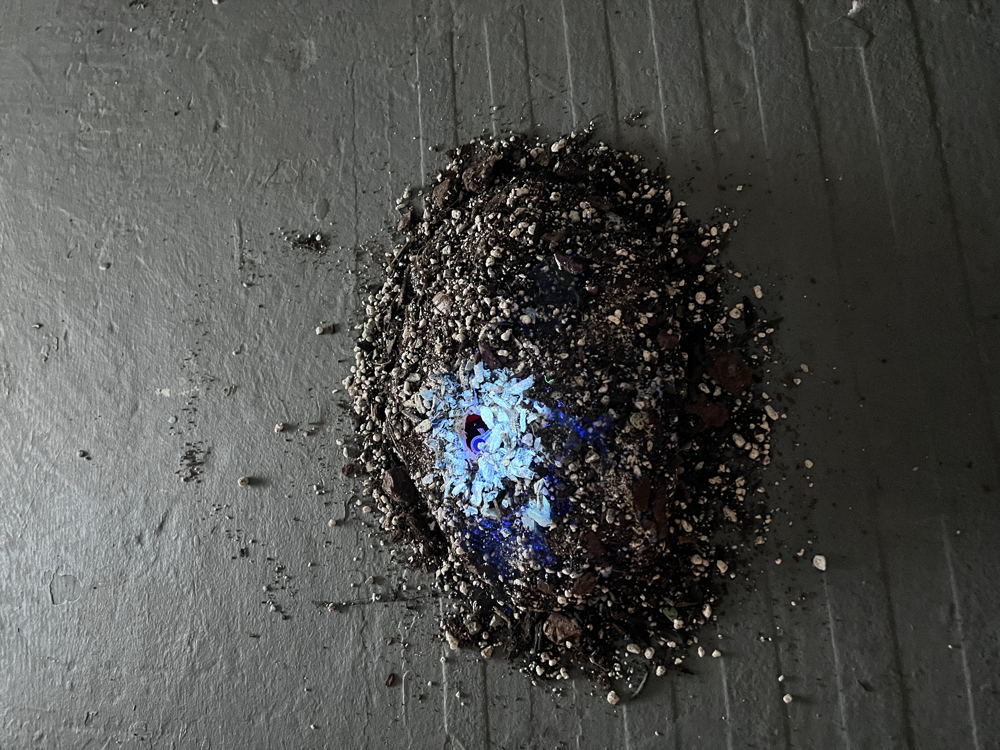
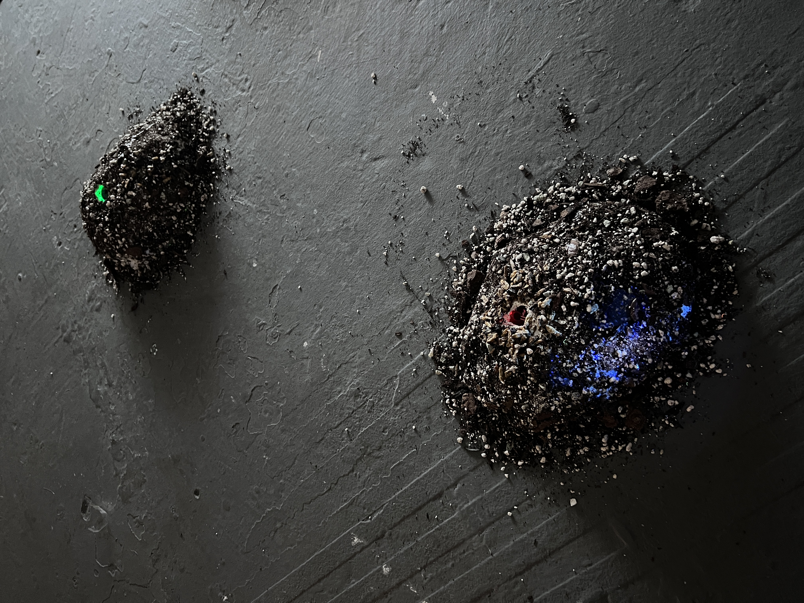
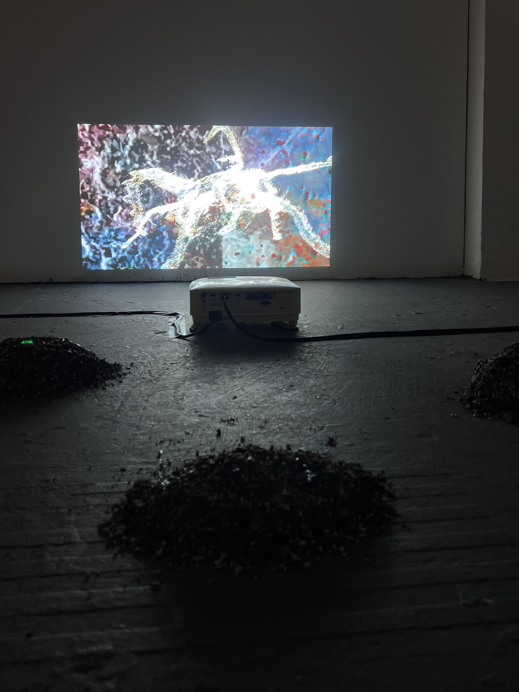
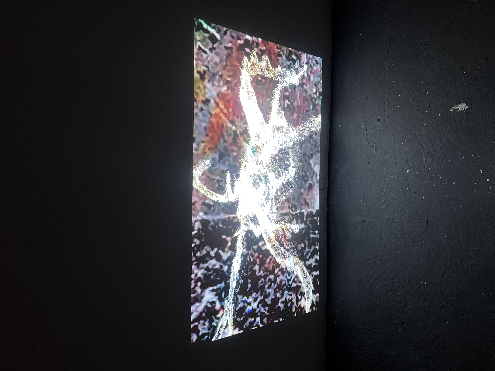

Insectum
2025
Soil, clay, crickets, arduino
The Latin word "insectum" means "cut into" or "segmented," reflecting the segmented body structure of insects, and is the root of the English word "insect". This interactive installation imagines a future where insect farming has become a mainstream response to the global food crisis. While insects are often promoted as a sustainable protein alternative, the project challenges the assumption that simply expanding our diet can solve the issue of global hunger, which is deeply rooted in capitalism. From a speculative angle, the installation provides a sensory experience through both vision and scent. Scent-release atomisers are activated by pressure sensors—when force is applied, the smell of soil is released. At the same time, the projected image of a cricket begins to distort, creating an experience that feels unfamiliar, even alien. By unsettling the audience through scent and sensory engagement, the piece explores the politics of food, the ethics of consumption, and the strange intimacy of eating in a world shaped by scarcity and control.



